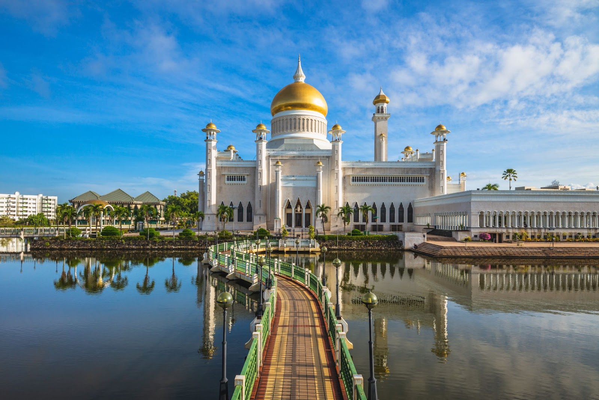

Rich Heritage
Brunei has a rich cultural heritage shaped by Malay traditions, Islamic values and its historical conne ctions with the wider region. Visitors also can admire historic landmarks, Explore Kampong Ayer and learn about their traditional customs.
Explore Heritage